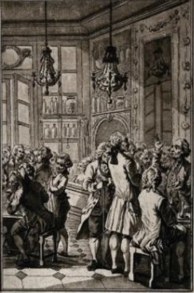

What is ice cream？
Ice cream is a frozen dessert typically made from milk or cream that has been flavoured with a sweetener, either sugar or an alternative, and a spice, such as cocoa or vanilla, or with fruit, such as strawberries or peaches. Food colouring is sometimes added in addition to stabilizers. The mixture is cooled below the freezing point of water and stirred to incorporate air spaces and prevent detectable ice crystals from forming. It can also be made by whisking a flavoured cream base and liquid nitrogen together. The result is a smooth, semi-solid foam that is solid at very low temperatures (below 2 °C or 35 °F). It becomes more malleable as its temperature increases.
How to Make food？
ICE Cream
1 (14 ounce) can sweetened condensed milk.
½ cup cold milk.
1 tablespoon vanilla extract.
⅛ teaspoon salt.
1 pint heavy cream.
- Cook the milk, cream, and sugar until the sugar has dissolved
- Transfer the mixture to a measuring cup, then add the vanilla extract. ...
- Pour the mix into an ice cream maker and churn according to the manufacturer's directions.
- erve immediately or ripen in the freezer before serving.
tips: Core techniques for ice-free slag
Reduce water: Replace some of the sugar with high-fat light cream (such as Blue Windmill light cream with 38% fat), condensed milk or white chocolate.
Whipped cream: Whip the light cream to 6-7 degrees (just formed), and add air to enhance the smoothness.
Stir in batches: Stir once per hour for 3-4 times during freezing to prevent ice formation.
Ice cream history
tip: click on the below picture or sentence to learn more!!

1. Ancient Origins (1600 BC - 10th century AD)

2. Middle Ages to Renaissance (11th-16th century)

3. European court communication (17th-18th century)

4.Industrialization and Globalization (19th-20th Century)

5. Modern Innovation (21st Century)